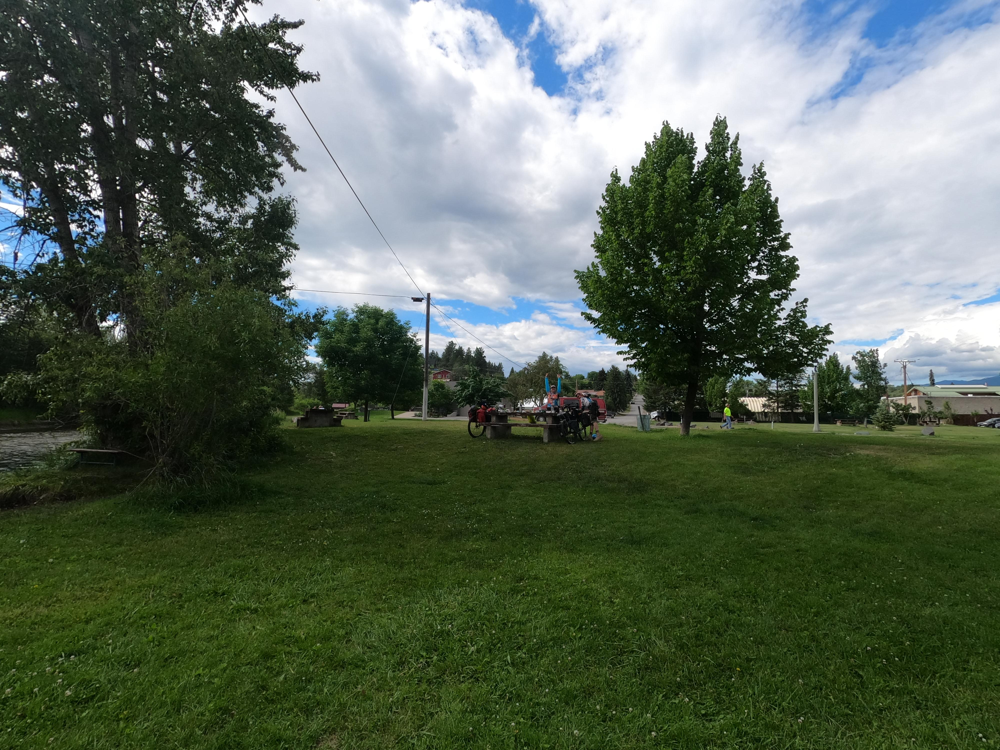
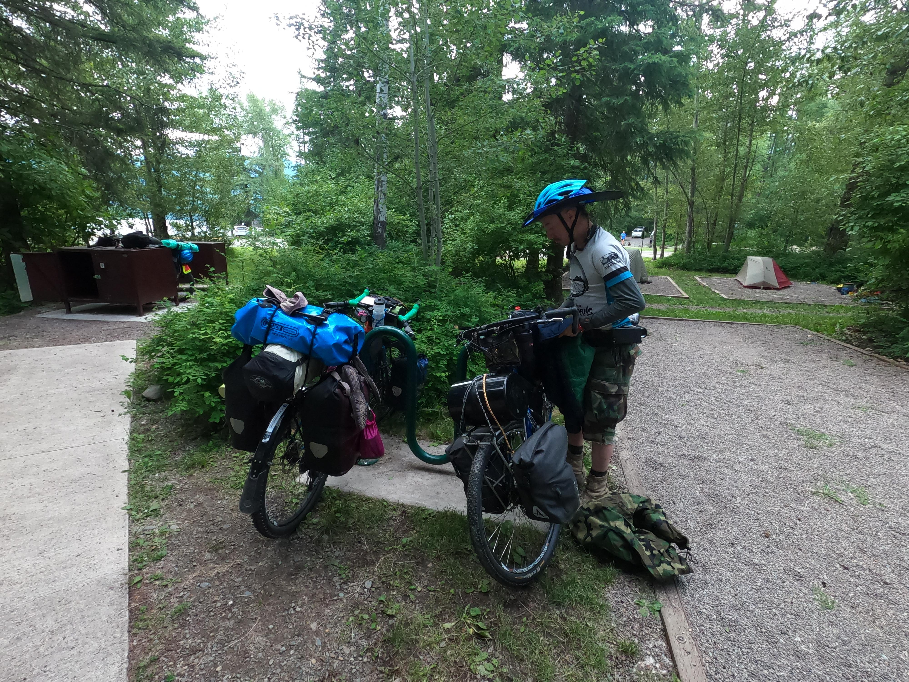
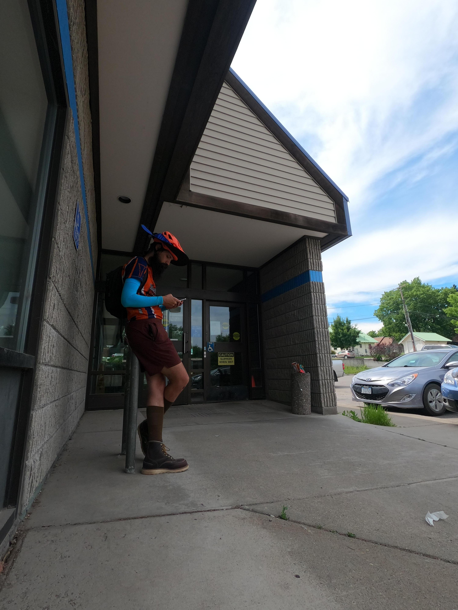
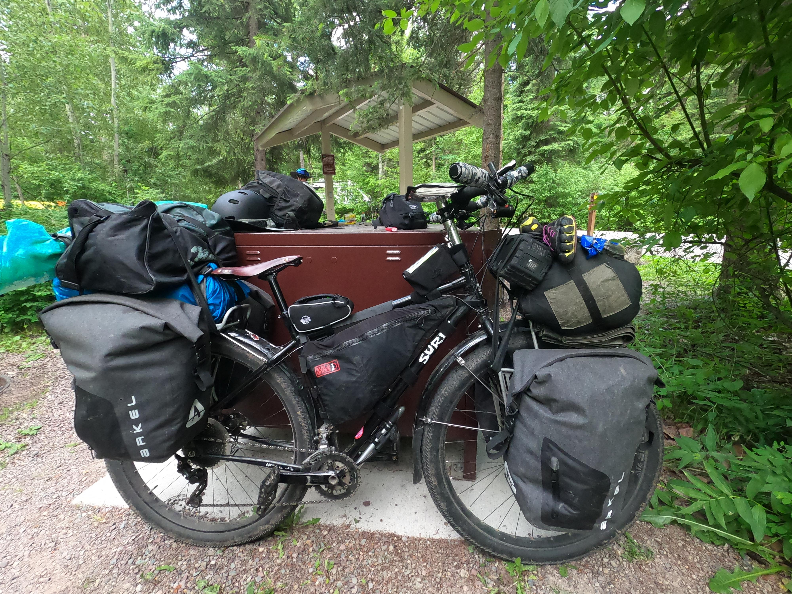
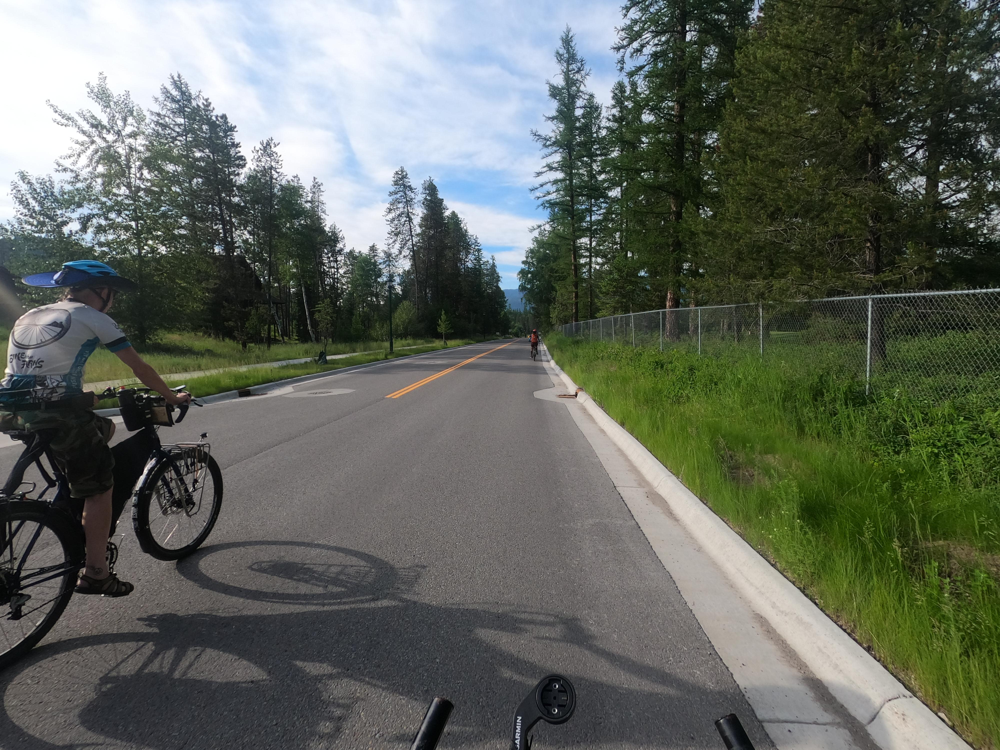
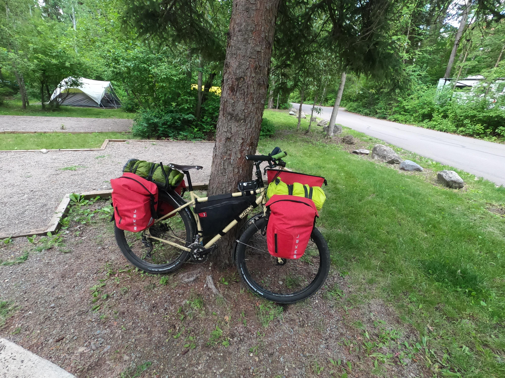
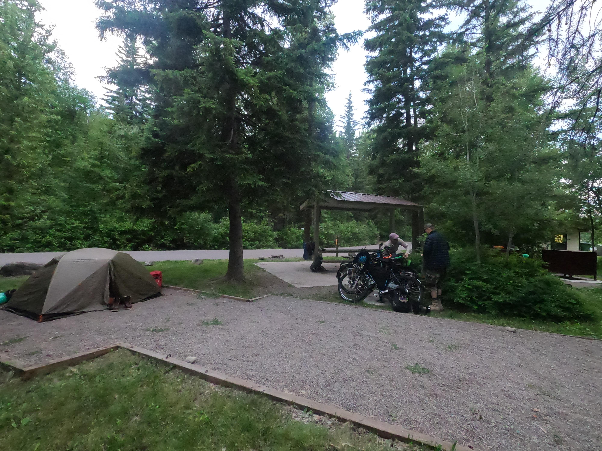
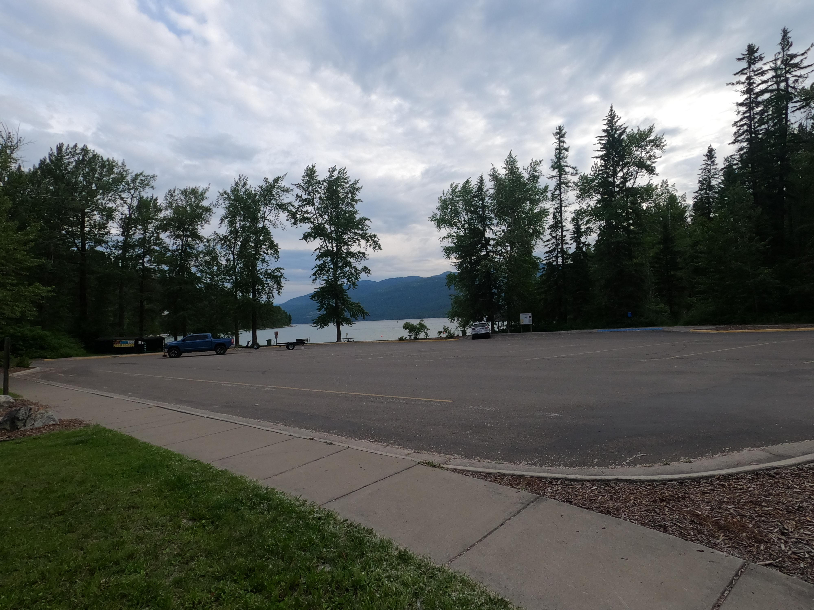
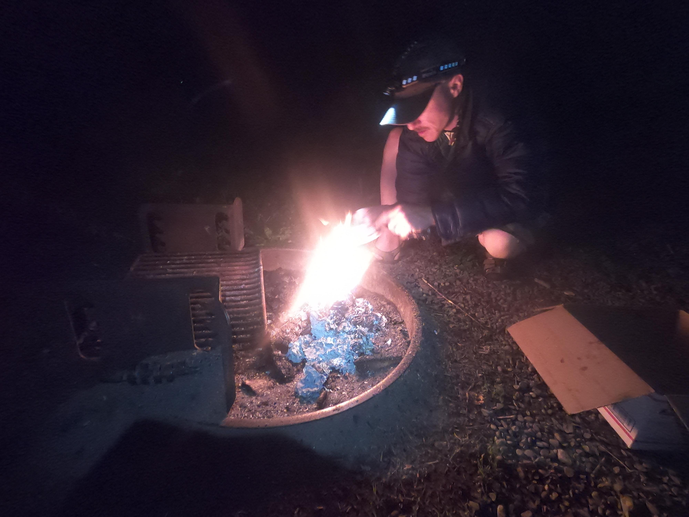
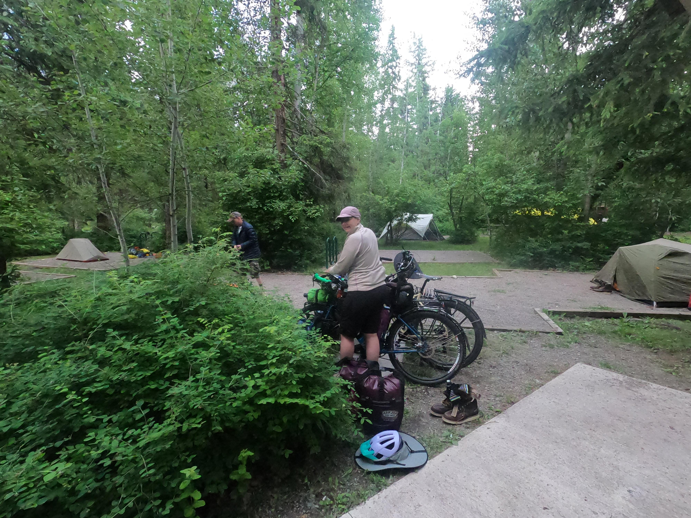

Post from Eureka (written by RH)
We made it. The van has been returned, our gear packed and repacked several times, a rest day taken in Whitefish, the shuttle boarded on time, and disembarked from. We're now in Eureka. I have even figured out how to post to this blog with git, and how to use the GoPro camera. No more deadlines.
Here's some pictures, in no particular order:
- 
Finally made it Eureka. Chillin.
- 
We got up EARLY today to catch the 10 am shuttle.
- 
Vlad standing out in front of the post office in Whitefish
o
- 
Loreli, (Rebeccas bike) staged for ride to shuttle.
- 
Friends ahead, biking to shuttle.
- 
Duncan (Vlad bike) is loaded, staged to catch the shuttle.
- 
The campsite at Whitefish lake state park
- 
A shot of the lake, early before shoving out.
- 
Patrick starting a fire at camp in Whitefish.
- 
Getting ready to shove off.
Text from in van, 6/22/2021
We are on highway 2, and I have vi opened up on my Toughbook; I'm editing a brand new, blank file. Just entered into Shelby Montana, en-route to Glacier National Park, mountains occasionally looming in the distance. We have been in this rental van for what feels like a lifetime, but in fact, it's only been since 11AM yesterday that we have been in here. There was initially an intention to camp on the eastern edge of Montana, but time did not allow for it, so, we have been driving through the day, the night, then the day agian. We are running up against exactly one hard deadline after the van is due tonight at 11PM in Columbia Falls, MT. The shuttle from Whitefish, MT to Roosvile, MT, where we are officially beginning the route. Some shuffing of gear is in order, as well as exactly two nights of camping to recover from being in transit. I still have to figure out what the template for this blog will be ( is a template even in order for such a thing? ). A lot is up in the air, but I feel that at least I am ready for action.